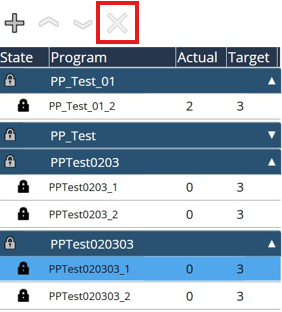

Modification
Ajouter des packs de plan de production
Cette fonction permet d’ajouter les packs de plan de production dans la liste de plan de production. Les fichiers d’origine peuvent se trouver sur un disque local, un disque amovible, un disque réseau. Les packs de plan de production ajoutés seront listés et les sous-tâches qui appartiennent aux packs de plan de production seront triées ci-dessous.

Verrouiller/Déverrouiller le plan de production

Cette fonction permet de verrouiller/déverrouiller le pack de plan de production. Une fois le pack de plan de production importé, il est verrouillé par défaut. Sélectionner un plan de production et cliquer sur le bouton de verrouillage pour déverrouiller le plan de production, ce qui signifie que le plan de production est désormais un plan de production actif. Une fois que le pack du plan de production est actif, tous les programmes qu’il comprend peuvent être traités un par un. Verrouiller/déverrouiller les impacts sur l’ensemble du plan de production, ne pas permettre de définir un programme unique. Un seul plan de production peut être Actif ; un plan actif est surligné en couleur foncée. Un plan de production actif ne peut pas être supprimé immédiatement, toute autre opération doit verrouiller le plan de production d’abord.
Ajustement de l’ordre du plan de production
Cette fonction permet d’ajuster la priorité du pack de plan de production dans la liste de plan de production, ce qui modifie la séquence d’usinage. Cette fonction sera désactivée pendant l’exécution du plan de production. Sélectionnez un plan de production et utilisez ce symbole haut/bas pour ajuster l’ordre. Le plan situé en haut a la priorité la plus élevée. Chaque plan de production déverrouillé sera traité dans l’ordre, de haut en bas. (Fonction pas encore exécutée)

Supprimer un plan de production
Cette fonction permet de supprimer un pack de plan de production de la liste de plan de production Sélectionnez un plan de production et utilisez le symbole « X » pour supprimer le pack de plan de production. L’entièreté du pack sélectionné sera supprimé, il n’est pas permis de supprimer un seul programme individuellement. Le plan de production est supprimé de la liste de plan de production uniquement, les fichiers bruts qui sont stockés sur le disque local ne sont pas supprimés. Cette fonction sera désactivée pendant l’exécution du plan de production.
